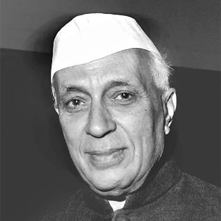

Jawaharlal Nehru

About
- Jawaharlal Nehru (1889-1964) was an Indian politician and statesman who played a crucial role in the struggle for India's independence from British rule. He was born on November 14, 1889, in Allahabad, India, into an affluent family. Nehru's father, Motilal Nehru, was a prominent lawyer and a leader in the Indian National Congress.
Early Life and Background
- Birth and Family Background
- Education and Influence of Western Ideas
- Connection with Indian National Movement
Role in India's Independence Struggle
- Association with Mahatma Gandhi
- Leadership in Civil Disobedience and Non-violent Protests
- Contribution to the Quit India Movement
First Prime Minister of Independent India
- Taking Office as Prime Minister
- Policy Priorities and Vision for the Nation
- Implementation of Socialist and Secular Principles
Legacy and Impact
- Founding Father of Modern India
- Advocacy for Non-Alignment and Global Diplomacy
- Criticisms and Controversies
- Continuing Relevance and Commemorations